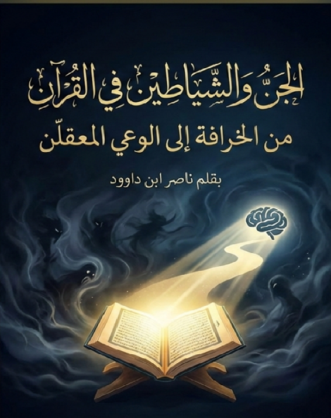

مقدمة الكتاب
عزيزي القارئ، في عالمنا اليوم، حيث تمتزج الحكايات الشعبية بالروايات الدينية، غالباً ما نجد أنفسنا محاصرين بصور نمطية عن "الجن" والشياطين: كائنات مرعبة تتسلل في الظلام، أو أرواح شريرة تسيطر على حياتنا. من قصص الأجداد عن "العفاريت" إلى أفلام الرعب الحديثة، أصبح هذا العالم الغيبي مصدر خوف أكثر منه مصدر تأمل.
لكن هل هذا التصور يعكس حقيقة ما جاء في القرآن الكريم؟ أم أنه نتاج تراكمات ثقافية وخرافات متراكمة عبر العصور؟ في كتابي هذا، "الجن والشياطين في القرآن: من الخرافة إلى الوعي المعقلن"، أدعوك إلى رحلة ممتعة ومفيدة لإعادة اكتشاف هذه المفاهيم من خلال النص القرآني نفسه.
لن نعتمد على الروايات الشفهية أو التفسيرات التقليدية السطحية، بل سنعود إلى أصول اللغة العربية والسياقات القرآنية لنفهم "الجن" كما يجب: ليس ككائنات خارقة مرعبة، بل كرمز للخفاء والنفس البشرية، والشياطين كصفة للتمرد والإغواء الذي قد يوجد داخل كل منا.
📌 تنبيه منهجي مهم:
تنطلق هذه السلسلة من قناعةٍ أساسية مفادها أن القرآن الكريم لا يُختزل في قراءة واحدة، ولا تُستنفد دلالاته في تفسيرٍ بعينه. هذه السلسلة تتضمّن أطروحاتٍ متعددة حول مفاهيم قرآنية مركزية، وقد تتنوّع المقاربات وتختلف زوايا النظر، لا بقصد التشويش، بل بقصد تمرين العقل على التمييز، وردّ الأقوال إلى أصولها.
ملخص الكتاب
يقدم هذا الكتاب قراءة معاصرة ومتجددة لمفهومي الجن والشياطين في القرآن الكريم، متجاوزاً التصورات الخرافية والشعبية نحو فهم عقلي ومعقلن. يناقش المؤلف كيف أن القرآن يعمل على تحرير الإنسان من الرعب الغيبي من خلال تقديم رؤية متوازنة تجمع بين الإيمان بالغيب واستخدام العقل والفهم الدقيق للنصوص.
يتناول الكتاب بالتحليل اللغوي والدلالي مفاهيم "الجن" و"الشياطين" و"إبليس" في القرآن، مبرزاً الفرق بين التصور القرآني الأصيل والتصورات المتراكمة عبر الثقافات والتاريخ. كما يقدم قراءة متعمقة لقصة إبليس ورفضه السجود، ليس كحادثة تاريخية فقط، بل كرمز للكبر والتمرد الذي يمكن أن يوجد في النفس البشرية.
الكتاب يهدف إلى تمكين القارئ من فهم هذه المفاهيم بطريقة تخلّصه من الخوف غير المبرر وتدفعه نحو تحمّل المسؤولية الأخلاقية والروحية في حياته.
أبرز مميزات الكتاب
- تحرير مفهوم الجن والشياطين من التصورات الخرافية
- تحليل لغوي دقيق للمفاهيم القرآنية الأساسية
- مقاربة عقلانية تجمع بين الإيمان بالغيب واستخدام العقل
- دراسة متعمقة لقصة إبليس ودلالاتها الرمزية
- تصحيح المفاهيم الخاطئة الشائعة في الثقافة الشعبية
- عرض منهجي للقراءات المتعددة مع ترك مساحة للقارئ للتفكير
- ربط المفاهيم الغيبية بالواقع النفسي والاجتماعي للإنسان
- أسلوب واضح وسلس يناسب القارئ غير المتخصص